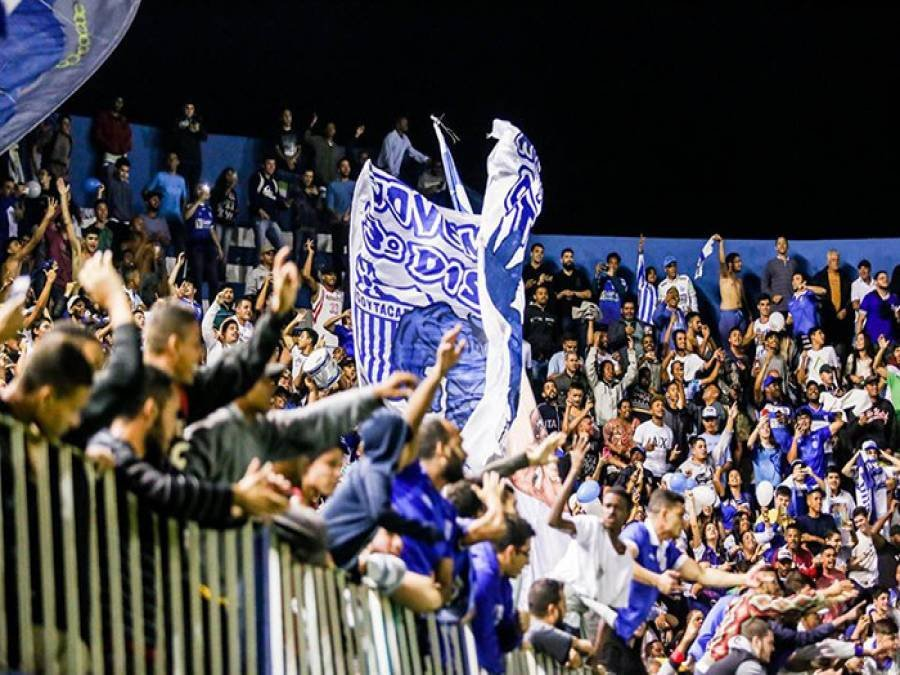

A tragédia do quase
Ou: como descobri o Goytacaz em São Fracisco do Itabapoana.

Para uma criança (e, sejamos francos, para quase todo adulto), o limite do mundo coincide com o limite da própria experiência possível, do próprio quintal. Nascido e criado no Parque São Caetano, meu universo tinha cheiro de cloro e terminava na borda da piscina do Americano, onde eu fazia natação e polichinelos fora de ritmo. Torcia pelo Alvinegro sem fé ou martírio, por pura inércia geográfica. Na verdade, o que me levava ao estádio era o Fluminense, que eu ia ver com meu pai no velho Godofredo Cruz, hoje um cadáver de terra batida e escombros, demolido há anos para dar lugar a um empreendimento imobiliário que nunca, ou quase, chegou.
Na minha cabeça de menino, Campos tinha um time só. A existência do Goytacaz só me foi revelada num susto, longe dali, na casa de praia em Santa Clara. Conversava com Geraldo pintor e soltei a pergunta no piloto automático, com a insolência inocente de quem confirma que o mar é salgado: "Você é Americano, né?". O homem, no telhado, parou o rolo no ar, me olhou com uma gravidade quase ofendida e devolveu seco: "AQUI É GOYTACAZ".
Ali o mundo rachou. Descobri, de uma vez só, que havia outra cidade dentro da minha cidade, com uma legião de almas apaixonadas por uma entidade que não cabia na minha piscina. Lembrei de Geraldo no sábado, e dessa minha primeira inauguração da vida como ela é, enquanto assistia a mais um capítulo do quase acesso do Goytacaz. Não foi exatamente um jogo de futebol. A derrota para o Niteroiense no jogo de volta, após vitória na ida, teve todos os ingredientes do teatro do absurdo: um campo de várzea, cadeiras voando pelo ar e pelo menos seis ou sete, ou mais, expulsos. E claro, a tosqueira do VAR, que, pros times miúdos, representa além da plataformização do jogo que é, a quase bancarrota.
O Goytacaz é, por excelência, o time do quase. Quase sobe, quase embala, quase vira a chave, quase vai à falência. E quem olha o futebol com olhos de planilha não entende como alguém pode bancar uma causa assim. É simples: a vitória é banal. A vitória acomoda, engorda, transforma o torcedor num sujeito satisfeito. O "quase", não. Só ele eleva a experiência do jogo aos píncaros. Ao sobrenatural.
Ainda no sábado, "O Mais Querido", a dissidência, venceu o seu, considerando a contabilidade criativa, décimo Campeonato Brasileiro. Más línguas contam que se grita cada vez menos pelas ruas do RJ. Pudera, os idiotas venceram, transformaram o Brasileiro num campeonato óbvio e ululante, cujo grande êxtase é adivinhar quem cai. E aí, vai dar Gre-Nal dessa vez?
O desejo se sustenta na falta, nunca na posse. O torcedor do Goytacaz não quer uma SAF asséptica que ganhe jogos por obrigação contábil, ele é devoto de um sonho encantado que, por algum pacto secreto, nunca se rebaixa ao real. No fundo, o Goytacaz é o retrato sem retoque da própria Campos. A cidade inteira habita esse mesmo tempo verbal: quase metrópole, quase potência, sempre estacionada na promessa do que poderia ter sido, exatamente como um estádio derrubado à espera de um prédio que não sai do papel.
Anos depois daquela tarde em Santa Clara, entendo o peso da resposta que levei. O "AQUI É GOYTACAZ" do pintor não era sobre futebol ou sobre rivalidade de bairro. Era uma ode à paixão e ao passional, atributos necessários a se abraçar o desamparo e o impossível, sabendo perfeitamente que, no domingo seguinte, a bola vai bater na trave de novo. E ele estará lá, outra vez, cumprindo seu rito de Sísifo da bola.
Ao torcedor do Goytacaz, que o fantasma lhe seja leve. Até para que a catarse, se esta vier, tenha o gosto exato do nome que tem.